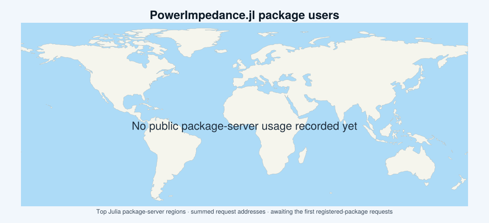

PowerImpedance.jl
PowerImpedance is a frequency-domain modelling and small-signal analysis package for AC, DC, and hybrid power systems. It combines detailed passive and active component models with multiport network assembly, AC/DC power-flow initialization, impedance extraction, and stability-analysis tools.
PowerImpedance is the renamed successor to PowerImpedanceACDC. It has a new package UUID because registered Julia package identities are immutable.
Capabilities
The package provides analytical models for:
- AC and DC voltage sources;
- lumped impedances and transformers;
- overhead lines and underground cables;
- modular multilevel and two-level converters;
- synchronous and induction machines; and
- black-box passive and converter frequency responses.
Driving-point and transfer impedances describe the resulting systems. Nodal and edge admittances support generalized Nyquist, Bode, passivity, small-gain, stability-margin, unstable-frequency, and eigenvalue analyses.
Gridspace extends the same physical constructors to deterministic parameter sweeps and uncertainty quantification. It preserves the ordinary scalar API, samples each uncertain network into ordinary numeric components, and performs the required power flow and linearization for every materialized configuration.
Installation
Install the package from the Julia package manager:
pkg> add PowerImpedanceThen load it with:
using PowerImpedanceOptional interoperability is activated by loading Measurements or LineCableModels in the same environment. See Package extensions for the supported combinations and data structures.
Where to start
- Introduction explains the multiport ABCD representation and impedance-based stability workflow.
- Network construction covers the scalar and declarative NetworkBuilder interfaces.
- Power-flow initialization explains when operating points are computed or reused.
- Impedance and stability analysis introduces the downstream analysis tools and result forms.
- Parametric and uncertainty studies documents deterministic grids, Monte Carlo studies, retained samples, and statistics.
- Examples contains executable Literate tutorials.
- API reference lists the public interfaces by module.
The theoretical background retained from the original package documentation is cited through the project bibliography.
User statistics

The map is generated in CI from Julia's public package-server request logs. It shows the top server regions by the sum of request_addrs for requests marked as user traffic. These regional aggregates are useful adoption indicators, but they are not a count of distinct people and must not be read as country-level telemetry.